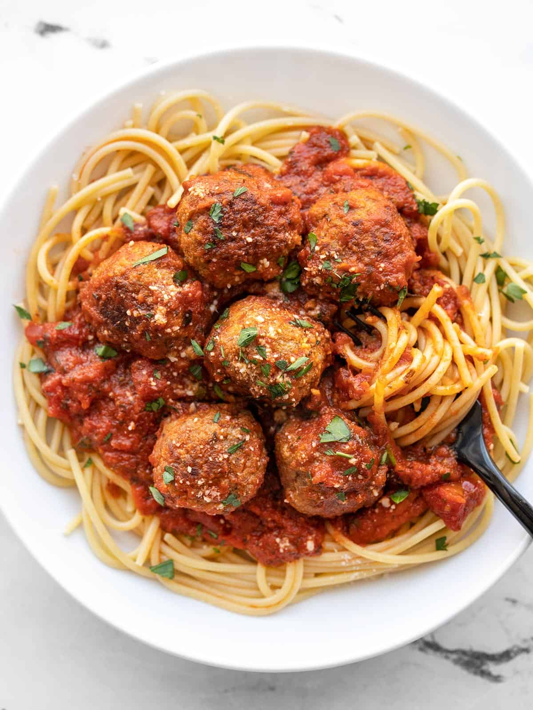

The Best Homemade Meatballs!

Brief description.
These meatballs are easy to make, and don't really
take too long at all. I developed this recipe on my
own by experimenting with different cooking methods,
cooking times and seasonings, until I discovered the
perfect recipe to my taste.
Ingredients:
- 500g Minced beef
- Tomato sauce base
- Thin spaghetti pasta
- Salt
- Pepper
- Garlic powder
- Onion powder
- Smoked paprika powder
- Grated parmesan cheese
- 1 Egg
- Bread crumbs
Steps:
- Preheat oven to 220 degrees celcius.
- Mix minced meat with all of the seasonings (tbs of each seasoning), 1 egg and 75g of breadcrumbs.
- Mix 25g of minced meat into a meatball until there is no meat left.
- Place the meatballs onto baking paper, onto a baking tray and place in the oven for 20 minutes.
- Get a pot of water and bring to a boil.
- Grab your desired about of thin spaghetti and place into the put, cook to taste.
- Once your pasta is cooked, place it in a strainer with a very small amount of oil and toss for 30 seconds.
- Once meatballs are cooked, take them out of the oven and let them rest for 2-3 minutes.
- Grab a bowl, put spaghetti into bowl and then put your meatballs on top, top with parmesian cheese.